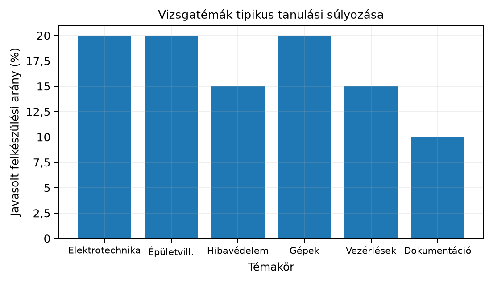

![Hat lánc. 1 Méretezési lánc: terhelés, adattábla (7.3, 26.2) –Ib→ vezeték, Iz (10.3) –Iz→ túláramvédelem (18.2, 18.3) –In→ feszültségesés (10.4) –A→ kioldási feltétel (21.3) –Zs→ szelektivitás (18.4) –Ik→ hurok- és FI-mérés (24.3) –Zs→ jegyzőkönyv (24.4, 42.2). 2 Motorleágazás: adattábla (26.2) → kapocstábla Y/Δ (26.3) → indítási mód (26.4) → készülékek (31.3, 31.4) → vezérlés (32.1–32.3) → beüzemelés (41.1, 41.2) → hibakeresés (32.5). 3 Világítás: lámpaszám (19.1, 19.2) → rajzok (12.2) → kapcsolások (16.2, 16.3) → szerelési módok (15.4) → építés (40.1) → hibakeresés (40.3). 4 Betáptól a fogyasztóig: mérőhely (17.1) → hálózati rendszer (21.2) → lakáselosztó (17.2, 17.3, 40.2) → FI-relé (21.4) → földelés, EPH, PE (22.1–22.3) → SPD (23.3). 5 Hibavédelem – mérés – dokumentáció: védelmi elvek (21.1) → kioldási feltétel (21.3) → FI-relé (21.4) → szemle, mérések (24.1–24.3) → felülvizsgálati jegyzőkönyv (24.4, 42.2). 6 Munkától a számláig: felmérés (15.1) → anyagkigyűjtés (15.2) → kalkuláció (43.2) → szerelés (40.1, 40.2) → átadás (13.4, 43.3) → számla, jótállás (43.2, 43.3). Lánconként eltérő keretminta.](figures/img/ve156-1.png)
Statikus változat (mint a PDF-ben)
A vizsgára készülés nem arról szól, hogy a több mint száz alfejezetet egymás után újraolvasod, hanem arról, hogy egy „műszaki GPS-szel” és egy jól rendezett „szerszámosládával” a kezedben beméred a terepet. Ebben az alfejezetben felépítjük a vizsgatémák térképét, összerendezzük a leggyakrabban kért számolási képleteket, és megtanuljuk, hogyan kerüld el a tipikus buktatókat. Ha ezt az alfejezetet megérted, a következő, Elméleti mintafeladatsor megoldásokkal alfejezetben már magabiztosan mozogsz majd.
A vizsga előtt a legrosszabb érzés az, amikor minden tételt ismersz külön-külön, de nem látod, mihez kapcsolódik. Kezdjük ezért a térképpel.
Előtte ismételd meg a belépő tesztet (Tanulási útvonalak, vizsga és önellenőrzés), és vesd össze a blokkonkénti pontszámaidat a kezdetiekkel: ahol alig javultál, ott kezdd a felkészülést.
Vizsgaszerkezet (egységes megjegyzés). A szakmai vizsga részeinek neve, száma, időtartama és pontozása a hatályos képzési és kimeneti követelményektől (programkövetelménytől) és a vizsgaszabályzattól függ; a 2020 utáni szakképzési rendszerben a vizsga jellemzően központi interaktív (írásbeli jellegű) vizsgarészből és projektfeladatból áll (ellenőrizendő: hatályos vizsgaleírás, a képző intézmény tájékoztatója). A könyv elméleti, számolási, rajzolvasási, szerelési, mérési, hibakeresési és szóbeli feladattípusai tanulási csoportosítás; az időkeretek és pontszámok tanulási javaslatok.
A szakmai vizsga összetétele és a súlyozás folyamatosan változhat a jogszabályi környezet és a képzési program függvényében (ellenőrizendő: aktuális vizsgaszabályzat, a képző intézmény vizsgakövetelményei). Az alábbi ábra egy tanulási célú, tipikus súlyozást mutat, hogy tudd, hová összpontosíts:

Mit jelent ez a gyakorlatban? 1. Tisztán számolós témakörök (Elektrotechnika, Gépek, Hibavédelem): ezeken a legkönnyebb pontot gyűjteni, mert a képletek készségszintű alkalmazása begyakorolható. 2. Ismeretközpontú témakörök (Épületvillamosság, Vezérlések): rajzolvasást, szabványismeretet és szerelési logikát kérnek. 3. Biztonsági keretek: az öt biztonsági szabály és a hibavédelem elve szinte minden írásbeli és gyakorlati tételben visszaköszön.
Az oszlopok a vizsga szerkezete (1.2) szerinti részek, kiegészítve a méréssel és a szóbelivel: El elméleti, Sz számolási, Ra rajzolvasás, Sze gyakorlati szerelés, Mé mérés, Hi hibakeresés, Szó szóbeli (szakmai beszélgetés). Jelölés: ++ gyakori, + előfordul.
| Témakör (alfejezetek) | El | Sz | Ra | Sze | Mé | Hi | Szó | Gyakorlófeladat |
|---|---|---|---|---|---|---|---|---|
| T1 Munkavédelem, öt szabály (2.1–2.4) | ++ | ++ | + | + | ++ | 44.2 szóbeli 1. | ||
| T2 Alapok, hálózatszámítás (3.1–4.5) | + | ++ | + | + | 44.2 feladatbank T1 | |||
| T3 Villamos és mágneses tér (5.1–5.4) | ++ | + | + | 5.2 feladatai | ||||
| T4 Váltakozó áram (6.1–6.4) | + | ++ | + | + | 44.2 feladatbank T2 | |||
| T5 Háromfázis (7.1–7.4) | + | ++ | + | + | + | 44.2 feladatbank T3 | ||
| T6 Mérés, műszerek (8.1–8.4) | + | + | + | ++ | ++ | + | 44.2 1. sor A2 | |
| T7 Anyagismeret (9.1–9.3) | ++ | + | + | 9.3 feladatai | ||||
| T8 Vezetékek, méretezés (10.1–10.4) | + | ++ | + | + | ++ | 44.2 1. sor C2, T4 | ||
| T9 Műszaki rajz, dokumentáció (11.1–14.3) | + | ++ | + | + | + | 44.2 rajzolvasási sor | ||
| T10 Épületszerelés, elosztók (15.1–17.3) | + | + | ++ | ++ | + | ++ | ++ | 44.2 2. sor B1, R3 |
| T11 Túláramvédelem (18.1–18.4) | ++ | ++ | + | + | + | + | ++ | 44.2 2. sor C2 |
| T12 Világítás, automatika (19.1–20.4) | + | + | + | + | + | + | 44.2 2. sor C4, T7 | |
| T13 Hibavédelem, földelés, villám, SPD (21.1–23.3) | ++ | ++ | + | + | ++ | + | ++ | 44.2 2. sor C3, T5 |
| T14 Ellenőrzés, felülvizsgálat (24.1–24.4) | ++ | + | + | ++ | ++ | ++ | 44.2 2. sor B3 | |
| T15 Transzformátor, gépek (25.1–30.3) | ++ | ++ | + | + | + | + | ++ | 44.2 3. sor C, T6 |
| T16 Kapcsolók, vezérlések (31.1–32.6) | ++ | + | ++ | ++ | + | ++ | ++ | 44.2 3. sor B1, D, R2, R4 |
| T17 Ipari elosztás, szekrények (33.1–35.4) | + | + | + | + | + | + | + | 44.2 1. sor C5 |
| T18 Fázisjavítás, UPS, napelem (36.1–36.3) | + | ++ | + | + | 44.2 3. sor C5, T2-C | |||
| T19 Elektronika (37.1–38.3) | + | + | + | + | + | + | 38.1 feladatai | |
| T20 Gyakorlati műveletek (39.1–42.2) | + | ++ | ++ | ++ | + | 44.3 gyakorlati feladatok | ||
| T21 Vállalkozás, munkajog (43.1–43.3) | + | + | + | 44.2 feladatbank T8 |
| Téma | Kulcsképesség |
|---|---|
| T1 | Az öt lépést sorrendben, indoklással elmondod és végrehajtod. |
| T2 | Eredőt, osztót és kétforrásos hálózatot számolsz. |
| T3 | Elmagyarázod a kondenzátor és a tekercs viselkedését, időállandót számolsz. |
| T4 | Impedanciából áramot és teljesítményeket számolsz. |
| T5 | Biztosan váltasz vonali és fázismennyiség között. |
| T6 | Kiválasztod a műszert, és értékeled a mérést. |
| T7 | Anyagot és alkatrészt a tulajdonságai alapján választasz. |
| T8 | Végigviszed a terhelés – vezeték – védelem – feszültségesés láncot. |
| T9 | Rajzot olvasol, hibát találsz, jelölést adsz. |
| T10 | Áramkört és elosztót építesz, ellenőrzöl. |
| T11 | Védelmet és jelleggörbét választasz, szelektivitást mérlegelsz. |
| T12 | Lámpaszámot számolsz, kapcsolást és érzékelőt választasz. |
| T13 | Ellenőrzöd a kioldási feltételt TN- és TT-rendszerben. |
| T14 | A vizsgálatokat helyes sorrendben végzed és dokumentálod. |
| T15 | Adattáblából számolsz, bekötsz, diagnosztizálsz. |
| T16 | Vezérlést rajzolsz, építesz, és hibát keresel benne. |
| T17 | Ipari leágazást és szekrényt értelmezel. |
| T18 | Kompenzálást méretezel, ismered a visszatáplálás veszélyét. |
| T19 | Alapkapcsolást felismersz és mérsz. |
| T20 | Biztonságosan, minőségben szerelsz és mérsz. |
| T21 | Kalkulálsz, ismered a jogokat és kötelességeket. |
A vizsgarészek tényleges szerkezete, időtartama és súlya a hatályos képzési és kimeneti követelmények, illetve a vizsgaszabályzat szerint ellenőrizendő; a táblázat tanulási térkép.
A vizsgán a tudást láncban kérdezik: egy motor adattáblájától a védelem beállításán át a mérési jegyzőkönyvig. A könyv témakörönként tanított, ezért az alábbi térkép hat fejezetközi láncot mutat. Minden csomópontban az alfejezet száma (N.M) áll, a nyílon pedig az az eredmény, amelyet a következő lépés felhasznál (például a méretezési láncban az üzemi áramból választjuk a vezetéket, abból az -t, ebből a védelem -jét).
A HTML-változatban a csomópontra kattintva megjelenik az alfejezet címe, a kulcsképlet vagy szabály és a gyakorlás helye (feladatgenerátor, szimulátor vagy feladatsor). Ismétléskor egy lánc csomópontjait egymás után nézd át.
Feladat. Válassz egy láncot, és írd le egy konkrét példán (például egy 5,5 kW-os, 400 V-os motor leágazásán) minden lépés eredményét: mit kapsz az adott alfejezet képletéből, és azt melyik következő lépés használja fel. A számokat a csomópontok kulcsképleteivel és a feladatgyűjteménybeli (44.1) példákkal ellenőrizheted. A vezérlési lánc ismétléséhez a Kétsebességű, sorrendi és késleltetett vezérlések alfejezet „Áttekintés: a motorvezérlések alapkapcsolásai” szakasza egy táblázatban foglalja össze a vezérléseket.
Az alábbi gyűjtemény a könyvben korábban részletesen levezetett összefüggések tömör rendszere. Nem elég a képleteket megtanulni: a vizsgán tudni kell kiválasztani a megfelelőt, és a mértékegységeket helyesen összeilleszteni. A teljes jelölésjegyzéket és a további képleteket a Képlet- és jelölésgyűjtemény függelék tartalmazza. Az eredmények gyors józansági próbájához a Mennyiségek, mértékegységek, előtagok és számolási rutin alfejezet „Nagyságrend-érzék” szakaszát használd.
Hol tanultad? Ohm, teljesítmény, munka 3.3; fajlagos ellenállás 3.4. Tipikus vizsgafeladat: fűtőtest árama és ellenállása, vezeték ellenállása.
Ohm törvénye és az ellenállás: a feszültség (), áram (), ellenállás (), fajlagos ellenállás (), hossz (), keresztmetszet (). Réz: (20 °C-on; üzemi hőmérsékleten nagyobb). A könyv számpéldái 0,017 és 0,0178 közötti kerekített értékeket is használnak, a feladatban megadott adat a mérvadó. Ha -t -ben adod meg, a keresztmetszetet -ben, a hosszt -ben helyettesítsd be.
Villamos teljesítmény és munka:
Hol tanultad? Impedancia 6.3; teljesítmények 6.4; háromfázis 7.1–7.3. Tipikus vizsgafeladat: soros RLC-kör árama és teljesítményei, háromfázisú fogyasztó árama.
Impedancia:
Teljesítmények:
Háromfázisú rendszer:
Hol tanultad? Transzformátor 25.1–25.3; aszinkronmotor 26.2. Tipikus vizsgafeladat: motor névleges árama és szlipje az adattáblából, transzformátor áttétele.
Transzformátor áttétele:
Aszinkron motor: (Állandó: , a hazai hálózaton.)
Hol tanultad? –– 10.3, 18.3; feszültségesés 7.4, 10.4; fázisjavítás 36.1; transzformátor zárlati árama 25.1, 25.3; nyomaték 26.2; kioldási feltétel 21.3; földelés 22.1. Tipikus vizsgafeladat: keresztmetszet feszültségesésre, kioldási feltétel mért -ből, kondenzátortelep mérete.
Vezeték-védelem koordináció (aranyszabály):
Feszültségesés (egyfázisban, egyszerűsített; az egyszeres nyomvonalhossz, a 2 az oda- és visszavezető miatt van; részletesen: Feszültségesés és a vezeték méretezése):
Feszültségesés (háromfázisban, szimmetrikus terhelés):
Fázisjavítás (részletesen: Fázisjavítás méretezése): Háromfázisú telepnél ( a teljes meddőteljesítmény, a vonali feszültség) deltába kötve fázisonként , csillagba kötve (). Jelölések: [var], [W], [V], [1/s], [F].
Transzformátor névleges és rövidzárási árama:
Nyomaték:
Hibahurok és kioldási feltétel (TN-rendszerben):
Hol tanultad? Soros és párhuzamos kapcsolás, osztók 4.1–4.3; Kirchhoff 4.4; hőfokfüggés 3.4. Tipikus vizsgafeladat: vegyes kapcsolás eredője, kétforrásos hálózat.
Hol tanultad? Kondenzátor és RC-tag 5.1, 5.2; RL-tag 5.4. Tipikus vizsgafeladat: töltés és időállandó, a kisütés ideje.
A töltés (kisütés), illetve az áram beállása kb. alatt gyakorlatilag lezajlik.
Hol tanultad? Csillag–delta 7.2, Y-Δ indítás 26.4; TT 21.3; megvilágítás 19.2; energia 3.3; transzformátor hatásfoka 25.2; árkalkuláció 43.2. Tipikus vizsgafeladat: lámpaszám irodába, ellenőrzése, éves energiaköltség, árajánlat.
A legjobb megtanulni mások hibáiból.
A vizsgán legtöbbször nem a behelyettesítés, hanem a képlet kiválasztása a nehéz. Keresd meg a feladatszöveg kulcsszavait.
| Ha a feladatban ez áll… | …akkor ezt használd | Csapda |
|---|---|---|
| „230 V, egyfázisú” | nem kell | |
| „400 V, háromfázisú, motor” | kimarad vagy | |
| „adattábla: kW” | ez (leadott); | felvettnek nézed |
| „fűtőellenállás, izzó” | fölösleges , | |
| „deltába kötött fogyasztó” | , | -mal számolsz |
| „csillagba kötve” | , | az áramot is osztod |
| „kVA, transzformátor” | (3 fázis) | -t írsz bele |
| „ %” | a %-ot tizedestörtként is, 100-zal is | |
| „mért , kismegszakító típusa” | : B , C , D (ellenőrizendő); | a névleges árammal számolsz |
| „TT, FI-relé” | V | mA-t nem váltasz A-ra |
| „hossz, keresztmetszet, egyfázis” | kimarad a 2-es | |
| „háromfázis, szimmetrikus” | -lel számolsz | |
| „ javítása” | , a felvett | a leadott teljesítménnyel számolsz |
| „lx, m², lm” | lefelé kerekítesz |
Egy gyakorlati vizsgán a tanuló azt a feladatot kapta, hogy méretezzen egy háromfázisú aljzatkört egy -os kompresszornak. A számolás során a tanuló a teljesítményt -ra átváltotta, de a tényezőt elfelejtette. (, mellett a helyes áram .) Az áram így helyett kb. -t adott ki. Szerencsére a szóbeli kifejtésnél észrevette, hogy a -es vezeték indokolatlanul vastag lenne, és javított. A vizsgán nem a hiba a lényeg, hanem az önellenőrzés.
Az írásbeli vizsgán a jól bevált algoritmus segít elkerülni a pánikot.
Recept – hat lépés a vizsgafeladatok megoldásához: 1. Térkép áttekintése: Nézd át a feladatlapot, és kezdd a számodra legkönnyebb feladatokkal. 2. Adatok kiemelése: Húzd alá az ismert mennyiségeket és mértékegységeket. 3. Mértékegység-rendezés: Írd át a -ot -ra, a -t -re, ha a képlet úgy kívánja. 4. Képlet kiválasztása: Írd fel az összefüggést betűkkel. 5. Behelyettesítés és számolás: Zsebszámológéppel, a mértékegységeket kiírva. 6. Nagyságrend-ellenőrzés: Reális-e az eredmény? mellé nem írhatok -t.
Az alábbi mintalapon ugyanazt a feladatot látod egy teljes pontos és egy részpontos megoldással (a 4. feladat: 11 kW-os motor, A).
![Két vonalas füzetlap egymás mellett. Bal: teljes pontos megoldás 8 pontra – adott mennyiségek mértékegységgel, keresett, képlet betűkkel (I_b = P / (√3 · U_v · cos φ · η)), behelyettesítés (11 000 / 524,3), eredmény I_b ≈ 21,0 A, választás 21 A ≤ I_n ≤ 25 A → 25 A, indoklás (indítási áram, D jelleg vagy motorvédő), ellenőrzés; a margón képlet 2 p, behelyettesítés 2 p, eredmény egységgel 2 p, ellenőrzés és indoklás 2 p. Jobb: tipikus 3 pontos megoldás – csak számok, √3 nélkül 11 000 / (400 · 0,86 · 0,88) = 36,3, majd 32 A, 40 A, de 40 A > 25 A, zsákutca; a margón aláhúzott levonások: képlet nincs 0 p, hiányzó √3 −2 p, egység hiányzik, ellenőrzés nincs.](figures/img/ve156-2.png)
Hasonlítsd össze a két lapot: a jobb oldali megoldás nem a számolásban, hanem a hiányzó képletben és a kihagyott -ban veszít pontot – és a hibás 36,3 A-es áram után nincs olyan kismegszakító, amely a 25 A-es vezetéket védené. A nagyságrend-ellenőrzés (6. lépés) itt jelezte volna a hibát.
Gyakorlás: ennek az alfejezetnek a kidolgozott példái, gyakorlatai és megoldással ellátott feladatai az Összefoglaló feladatgyűjtemény villanyszerelő tanulóknak című kötet 44.1 szakaszában találhatók.
A vizsgafelkészülés alapja a rendszerszemlélet. Ebben az alfejezetben felépítettünk egy vizsgatérképet, amely segít a tanulási idő arányos elosztásában. A témák közül az elektrotechnika, a gépek és a hibavédelem számolós tételei adják a legjobban előkészíthető pontokat. A képletgyűjteményben rendszereztük az egyenáramú alapokat (, ), a váltakozó áramú teljesítményeket () és a háromfázisú rendszereket (). A gépeknél elengedhetetlen a hatásfok () és a teljesítménytényező () használata. A védelemnél a legfontosabb koordinációs szabály az , valamint a hibahurokra vonatkozó kioldási feltétel . Megtanultuk az egységellenőrzés fontosságát, és azt a hat lépésből álló vizsgatechnikát, amely megakadályozza a kapkodást. Továbbvitt eredmény: Az itt összegyűjtött fogalmak és képességek az alapjai az Elméleti mintafeladatsor megoldásokkal alfejezetben található mintafeladatsor megoldásának, ezért ezt a képletgyűjteményt érdemes a gyakorló feladatok megoldása közben is nyitva tartani.
A számolási képletek az elektrotechnika stabil, klasszikus összefüggései. A vizsgasúlyozásra és a hivatalos vizsgakövetelményekre vonatkozó állítások a jogszabályi környezet változása miatt ellenőrizendők (aktuális OKJ/jogutód képzési és vizsgaszabályzat, képző intézmény tájékoztatója). A kismegszakítók zárlati kioldási feltételeinek pontos paraméterei (pl. B, C, D görbe, kioldási idők) a gyártói adatlapokon, illetve az MSZ HD 60364 sorozat aktuális kiadásában ellenőrizendők.